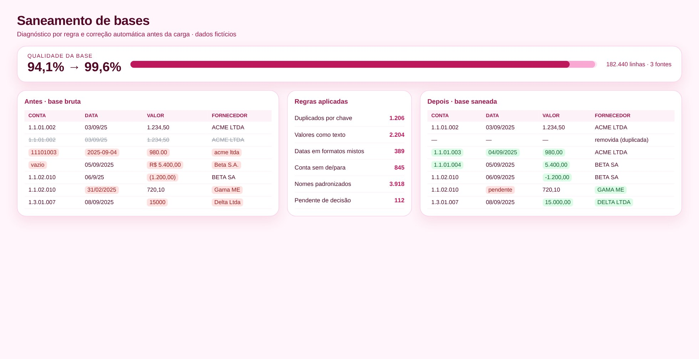

Decisões e conciliações são tão boas quanto a qualidade da base. Dados com duplicidades, campos vazios, formatos misturados ou contas sem de/para quebram cargas, cruzamentos e relatórios.
Meço duplicados, nulos, formatos e contas sem de/para.
Defino regras por campo e por tipo de problema.
Corrijo automaticamente o que é seguro corrigir.
Listo o que precisa de decisão humana.
Relatório de problemas antes × depois.
Geração de bases sujas sintéticas para testar cada regra de limpeza.
Defini a regra de negócio, modelei os dados, validei os números contra o processo manual e desenvolvi a ferramenta com apoio de IA.